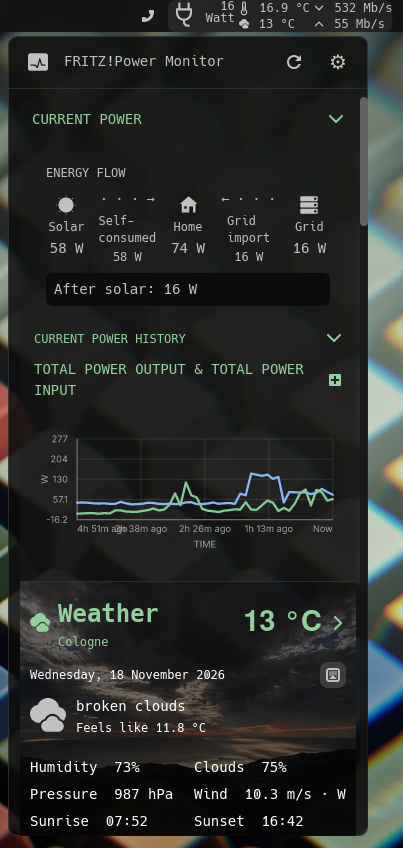
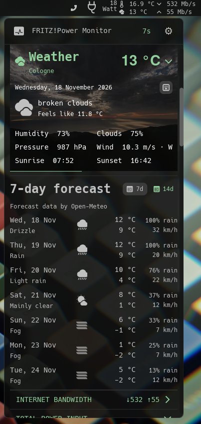
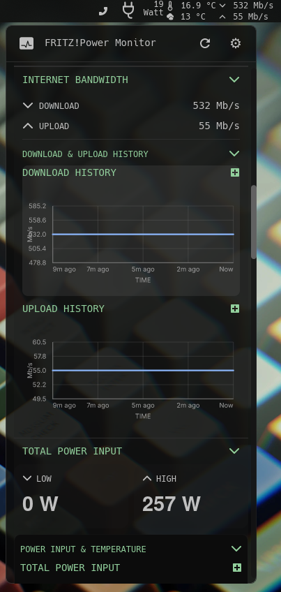
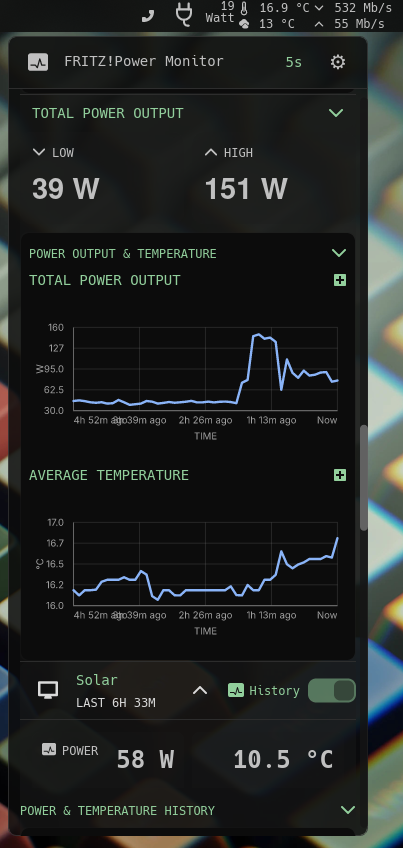
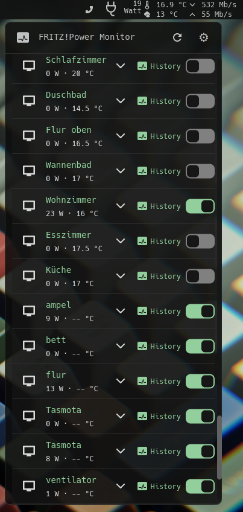
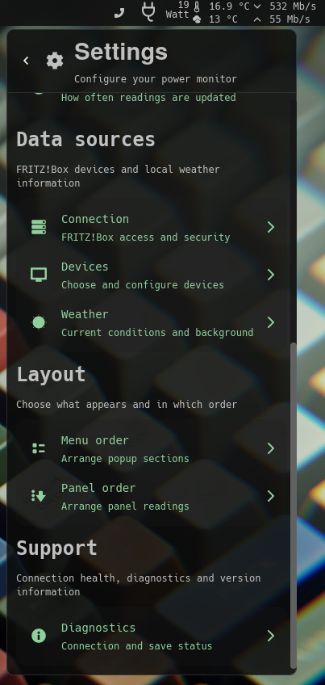
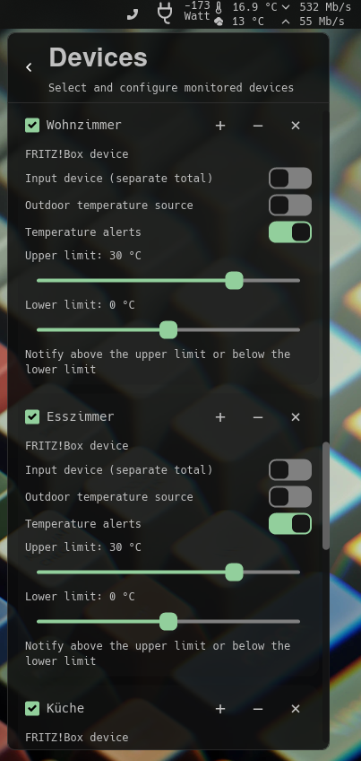
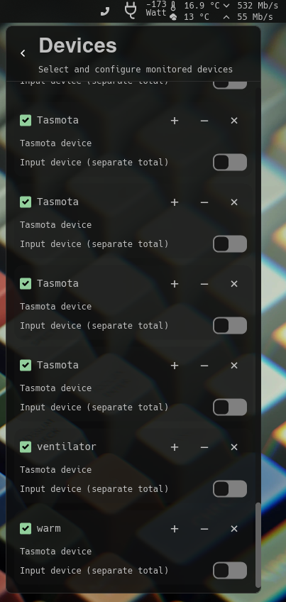
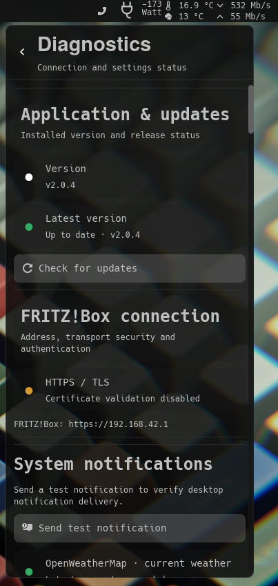
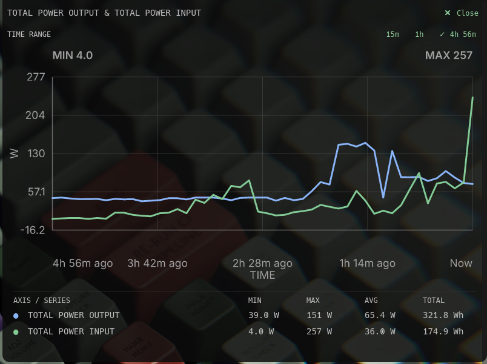

Power in the panel
Show current power and, optionally, average device temperature in the panel. You can change the text size.
A small COSMIC panel applet for checking power use, device temperatures and, if you want, local weather.
New: Tasmota supportTasmota plugs and meters can be monitored alongside FRITZ!Box devices. See how it works →
Live overviewPower · LiveCheck power readings and optional weather from the COSMIC panel.
Weather forecastWeather · 7 daySee current conditions and a seven-day forecast.
Power historyMonitoring · GraphsView input, output and individual device readings over time.
Device settingsDevices · SetupChoose which devices to show and set temperature alerts.
Device listDevices · LiveSee current power and temperature readings for connected devices.
Settings overviewConfigurationAdjust the applet and choose what it displays.
Expanded panelCOSMIC · PanelOpen the panel for total power and per-device history.
Connection settingsRouter · TLSSet the router address, credentials and trusted TLS certificate.
Power graphMonitoring · GraphsFollow household consumption changes in a detailed graph view.
Device detailsDevices · DetailsReview individual device readings and monitoring details.The panel shows the current readings. Open the popup for device details, graphs and weather. Sections can be collapsed independently, and their main readings stay visible.
Show current power and, optionally, average device temperature in the panel. You can change the text size.
Input, output and power difference have separate views. Individual device readings are available as well.
Small graphs show each selected device's power and temperature history, along with input and total-power history.
Tasmota smart plugs and power meters appear in the same list as FRITZ!Box devices. Their power readings are included in the totals, and supported switches can be controlled from the popup.
Optional desktop notifications when a device moves outside your configured temperature range. Alerts re-arm after recovery.
If enabled, current weather and temperature appear in the panel. The popup includes more details, and weather refreshes separately from power readings.
You can install it for your user without root privileges.
$ git clone https://github.com/gpkvt/cosmic-ext-fritzsmart-monitor-applet.git $ cd cosmic-ext-fritzsmart-monitor-applet $ make install ✓ Built release binary ✓ Installed applet and desktop entry
After installation, add it to the panel and connect it to your FRITZ!Box.
Open COSMIC Settings, find the panel applet list and add FRITZ!Power Monitor. Reopen Settings or log out and in if the list has not refreshed.
Open the applet settings, enter the FRITZ!Box URL and a user account allowed to access Smart Home data, then choose Load devices.
Select compatible devices, arrange their order and choose whether a device is an input that should be subtracted from net power.
Choose a package for your system. The downloads below are attached to release v@APP_VERSION@: release notes.
Download a package, then run its command from the directory containing the downloaded file. All packages are built for x86_64 Linux.
Native .deb package. APT resolves and installs the package’s declared system dependencies.
Install
sudo apt install ./fritz-power-monitor_@APP_VERSION@_amd64.debPortable application. No system installation is required; make the file executable and launch it.
Make executable and run
chmod +x fritz-power-monitor-@APP_VERSION@-x86_64.AppImage && ./fritz-power-monitor-@APP_VERSION@-x86_64.AppImageInstall the standalone Flatpak bundle for your user. This is separate from publication in the official COSMIC Store.
Install
flatpak install --user ./fritz-power-monitor-@APP_VERSION@.flatpakExtract the archive and launch the included binary. It also contains the desktop entry, application icon, README and license.
Extract and run
tar -xzf fritz-power-monitor-v@APP_VERSION@-x86_64-unknown-linux-gnu.tar.gz && ./fritz-power-monitor-v@APP_VERSION@-x86_64-unknown-linux-gnu/bin/fritz-power-monitorVerify downloaded files against SHA256SUMS before installing. The links above are fixed to v@APP_VERSION@; update them when publishing a new release.
Some details about connections, stored settings and how the applet handles failed requests.
Uses FRITZ!Box challenge-response login and validates HTTPS certificates by default. Add a router-specific PEM CA certificate when using a self-signed certificate without disabling hostname verification.
Router credentials and the optional weather API key are stored in ~/.config/fritz_solar.cfg with owner-only permissions.
Power readings refresh every 30 seconds to one hour (60 seconds by default). Weather refreshes independently every 5–60 minutes (10 minutes by default).
The last successful reading remains visible if a later refresh fails. A device with bad measurements is skipped without discarding healthy device readings.
Temperature alerts are optional and disabled by default. Notifications fire when a device crosses a configured limit and re-arm after the temperature returns to range.
Power and temperature samples are stored locally and restored after restarting the applet. Both saved samples and the selected retention period survive applet restarts. On startup, saved samples are reloaded and the same 5-minute to 4-year retention window continues to apply. History uses adaptive sampling capped at about 50,000 samples per series; the graphs do not provide daily yield or forecasts.
FRITZ!Power Monitor runs on the COSMIC desktop and reads data from FRITZ!Box Smart Home and Tasmota devices on your local network. The readings and controls available depend on the device and its firmware.
Requires a COSMIC session with panel applet support. The published Linux packages target x86_64; building from source requires a compatible Rust toolchain and GNU Make.
Requires a reachable FRITZ!Box with Smart Home support and a router account permitted to access Smart Home data. Use the router's local address or a hostname that resolves on your network.
FRITZ!Box Smart Home devices use the router's Smart Home API. Tasmota devices can be discovered through mDNS at startup and by an explicit search in Devices settings. The search can scan the FRITZ!Box local IPv4 /24 subnet. Tasmota power readings, history, shared totals and supported switching are integrated; temperature monitoring is not supported for Tasmota devices.
Weather is not required for core monitoring. To enable it, provide an OpenWeatherMap API key and a location; router monitoring continues independently if weather is unavailable.
Questions about compatibility? Ask or report a compatibility question on GitHub.
A few answers about supported devices, data and everyday use.
A COSMIC desktop session with panel applet support, a FRITZ!Box with Smart Home support, and at least one device exposing both power and temperature measurements. Building from source also requires a compatible Rust toolchain and GNU Make.
The core FRITZ!Box monitoring connects directly to your router from the applet. The optional weather integration contacts OpenWeatherMap and uses Wikimedia Commons for illustrative weather imagery. Weather is optional and can remain disabled.
Yes. Configure the relevant devices as inputs and follow input, output and power difference in their separate views. Individual device readings and history remain available.
Yes. Graph history is persistent and is not limited to the current applet session or a 24-hour window. Samples are stored locally in ~/.local/share/fritz-power-monitor/history.json and restored when the applet starts. Configure the retention period in Settings → Graph history, from 5 minutes up to 4 years; both this setting and the saved samples survive applet restarts. Sampling automatically adapts to the selected retention period and is capped at about 50,000 samples per series to keep storage bounded. History does not provide daily yield or forecasts.
Yes. Provide the router’s PEM certificate in the Trusted CA certificate setting. The certificate is added as a trust anchor while normal certificate-chain and hostname verification remain enabled.
Yes. Saved Tasmota devices are restored on startup and new devices can be found from Settings → Devices → Search for devices. The manual search uses mDNS and, when the FRITZ!Box URL contains an IPv4 address, scans that router’s local /24 subnet. Tasmota power readings contribute to per-device history and shared input, output and power-difference totals; supported switches can be controlled. Temperature readings are not currently supported.
For devices that expose switching support, the popup provides a switch. It remains disabled until the command is confirmed and refreshed readings arrive.
Open an issue in the project repository. Include your COSMIC version, FRITZ!OS version and relevant diagnostics, but never post passwords, API keys or private router details.
The source code, issue tracker and releases are on GitHub.